More settings from the recordings we already have.
A recorded demonstration contains a particular room and table. Augmentron gives that motion more visual settings. The robot still folds the towel, places the cup, or puts the flower in the vase. Its recorded actions and training labels stay the same.
Here is what those edits look like across our recordings.
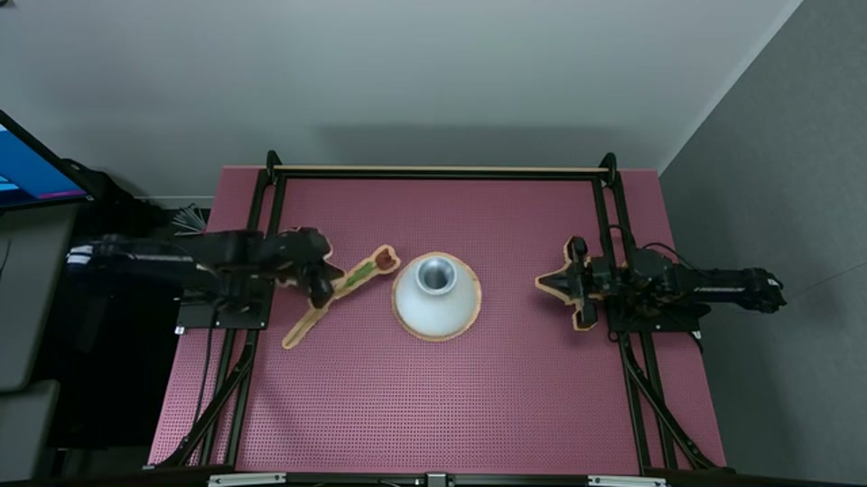
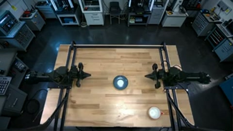
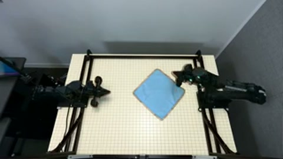
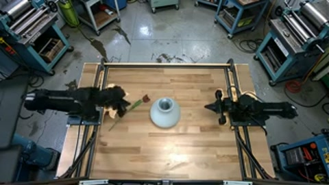
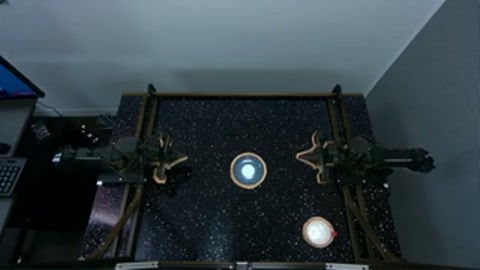
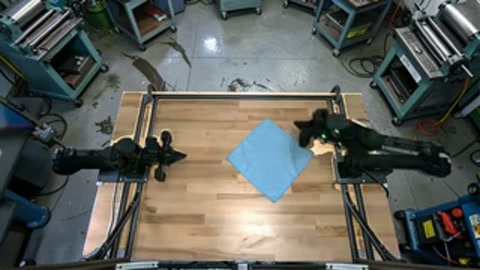
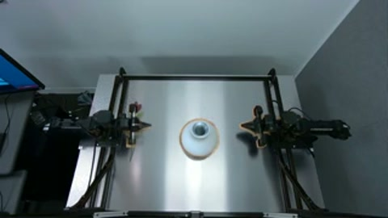
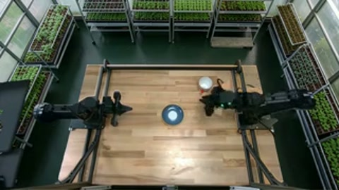
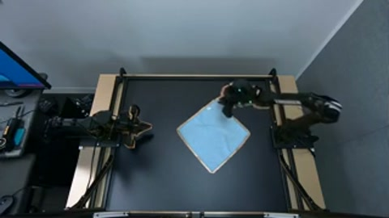
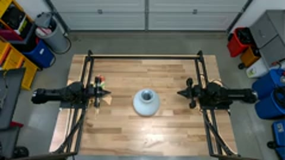
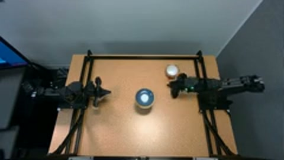
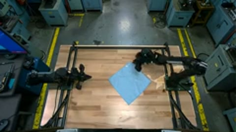
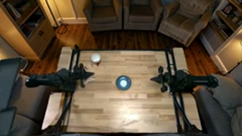
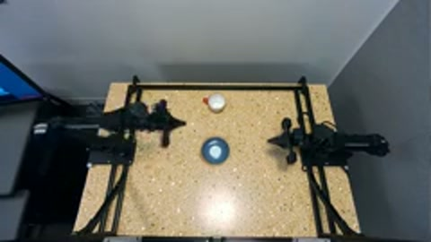
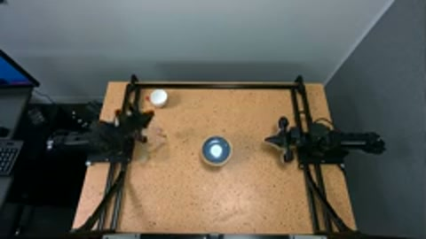
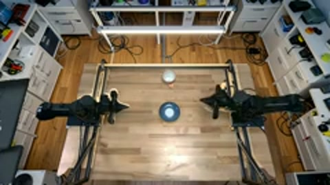
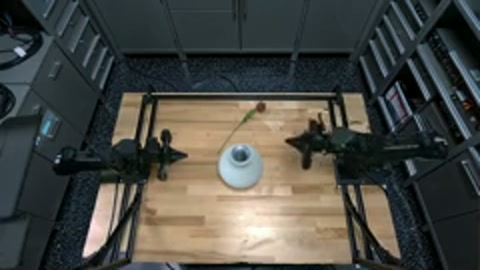
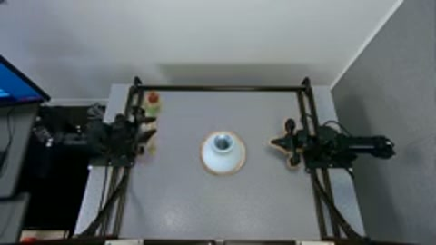
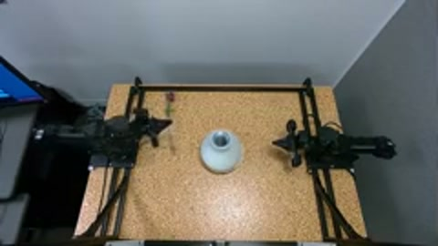
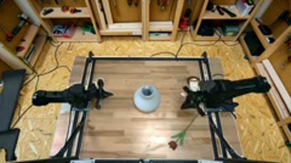
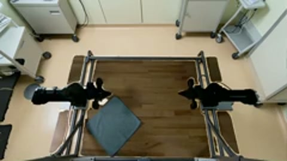
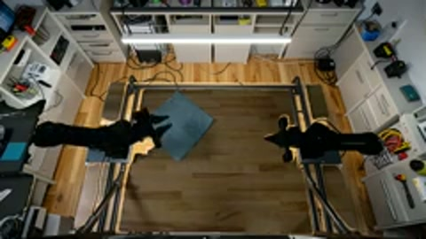
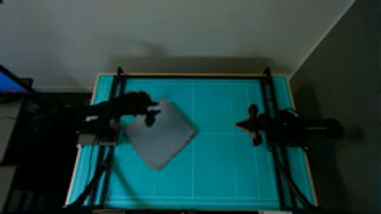
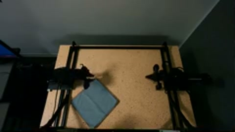
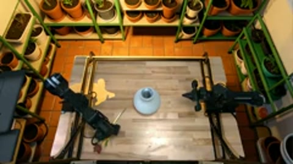
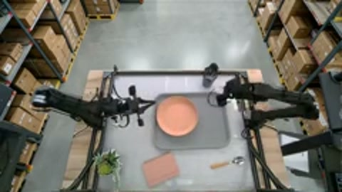
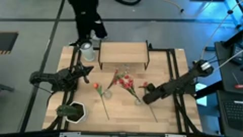
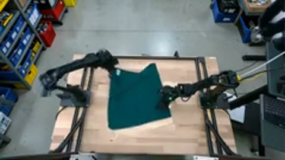
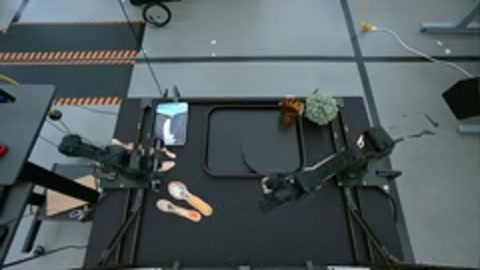
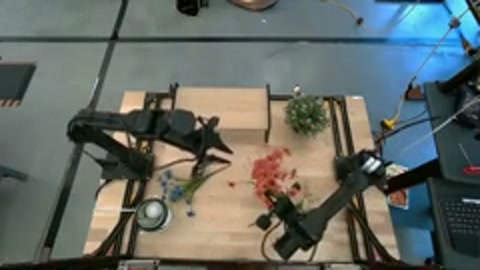
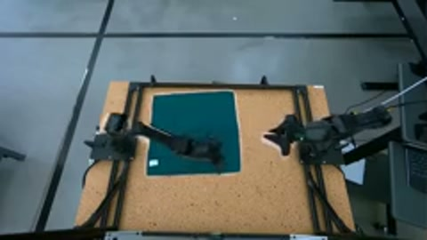
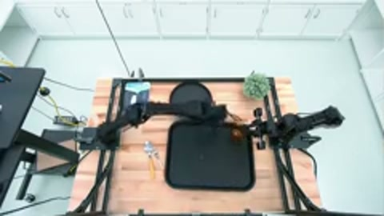
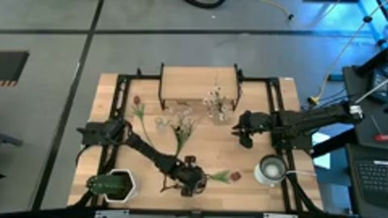
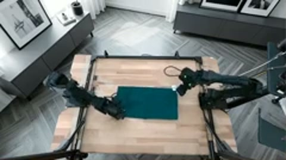
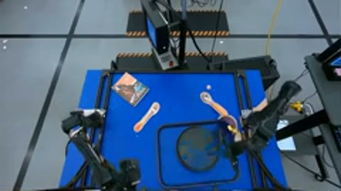
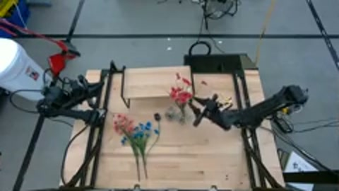
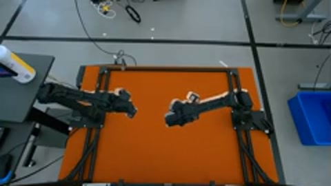
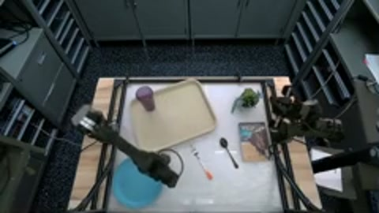
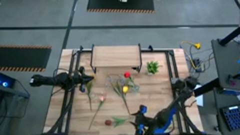
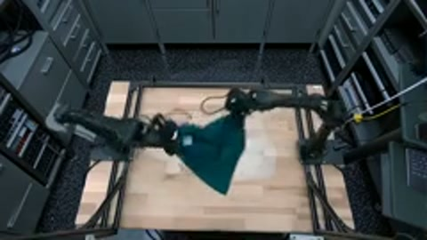
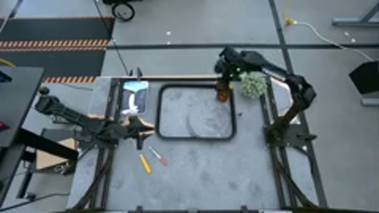
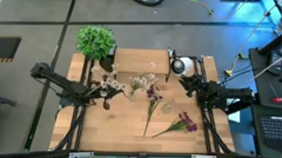
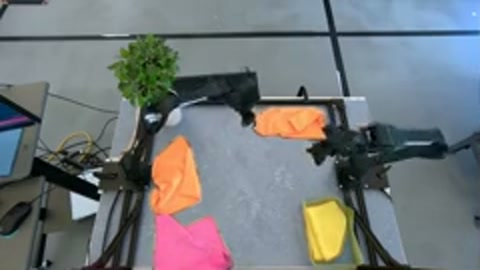
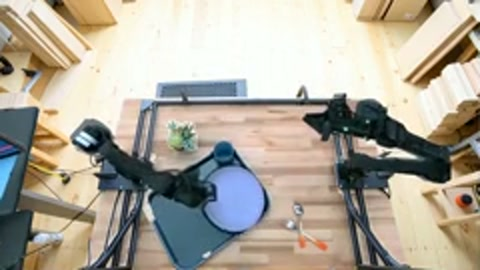
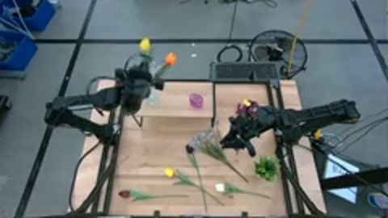
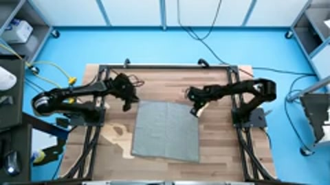
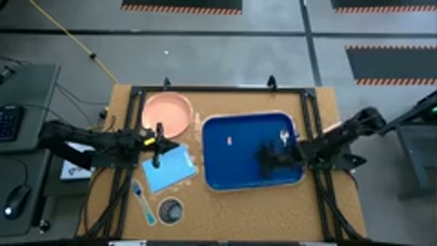
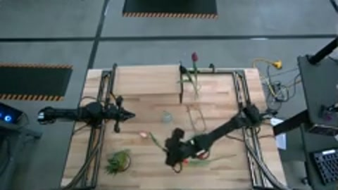
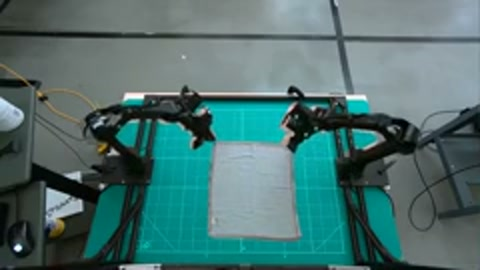
What shouldn’t change?
The towel and grippers must stay where the recorded motion expects them. We protect those pixels, then edit the room or table around them.
The recorded joint angles and camera calibration place the robot’s 3D model in each view. Task instructions guide masks for the objects and tabletop.
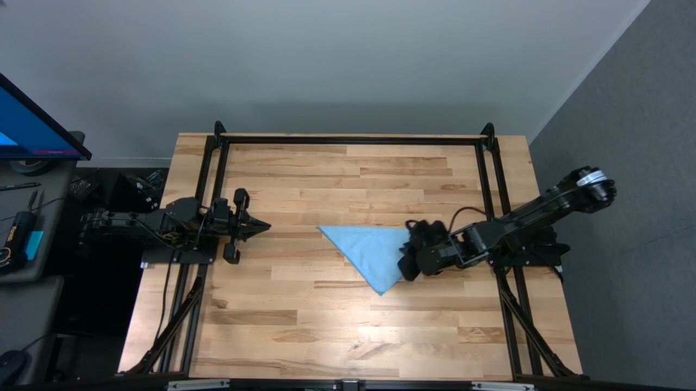
Generate a scene once. Reuse it through the recording.
We represent the surroundings with six views: a floor, a ceiling, and four walls. We generate those images and a static image of the working area once. Fixed-camera backgrounds are rendered once and reused. Wrist cameras render the surrounding scene from their changing recorded poses.
For a surface edit, we anchor a generated texture to the calibrated table plane. As the camera moves, the texture stays attached to the table. We composite the protected robot and task objects back over the rendered scene.
That reuse is the main idea. Generating the scene assets is a one-time cost. More frames add rendering and compositing work.
The full pipeline
Robot-mesh projections and SAM 3 masks protect the recorded foreground. A temporal-median reference guides FLUX.2-klein-4B generation of a static working-area image and a six-image cubemap. Rendering and compositing reuse those assets across the trajectory.
30 minutes of video. 28 minutes to augment.
We timed the complete pipeline on 104 cup demonstrations: 30 minutes of source video, four camera streams, and one node with eight H100s. Augmentron took 0.47 hours. RoboEngine, a generative augmentation baseline, took 8.14 hours on the same source set.
Timing scope and Cosmos-Transfer1
Timing covers cold model construction through local output audit. It excludes queueing, container-image retrieval, credential gates, artifact staging, inter-boot delays, and publication.
Cosmos-Transfer1 takes 10.31 hours for a measured single-view run. The paper extrapolates 23.79 hours for four views; that four-view figure was not measured directly.
Does the robot improve?
We fine-tuned π0.5 policies for three tasks: placing a cup on a saucer, folding a towel, and inserting a flower into a vase. The dataset contains 1,793 real demonstrations and 9.16 hours of recorded data.
In the controlled experiment, we replaced half the training data with Augmentron edits: 50% real, 25% room edits, and 25% surface edits. Both recipes used the same data volume and 30,000 training updates. Each source demonstration was represented once.
Original setup
Where the data was collected
Added distractors
Same task, extra objects
Steel surface
Wood replaced with reflective steel
With extra objects on the table, success rises from 18.0% to 45.3%, a gain of 27.3 percentage points. We changed rooms and surfaces during augmentation. We didn’t explicitly insert distractors. The test asks whether those edits transfer to another kind of visual shift.
The gains vary by task. All three tasks improve with distractors and on steel. In the original setup, cup placement falls from 86% to 72%, even though pooled success improves.
The paper also compares larger training recipes. Those runs use different data volumes; the breakdown and full results are below.
Task results and larger recipes
Same volume. Real only and 50/50 share the 30k-update schedule and 1× data volume. Source episodes are split into disjoint halves, so every demonstration is represented once.
Larger recipes. All three train for 45k updates. Augmentron uses 3× volume; RoboEngine and Masked Noise use 2×. RoboEngine is a generative augmentation baseline. Masked Noise changes unprotected pixels with static, pixelation, blur, blackout, or color jitter. These comparisons evaluate the complete recipes and do not isolate each pipeline component.
Exploratory checkpoint. The 30k Augmentron 33/67 checkpoint comes from a run scheduled for 45k updates. Compared with 50/50 at 30k, pooled distractor success rises from 45.3% to 50.7%, while original-setup and surface success fall. Its data volume and decay schedule differ. These runs do not establish a scaling trend.
Cameras and trials. Augmentron processes two fixed and two wrist streams. The trained policies observe the high fixed view and both wrists. Starting configurations are manually reset and unpaired across models. Progress is scored from 0 to 3; only a score of 3 counts as success.
On a small screen, scroll the table sideways.
| Updates | Recipe | Volume | Task | Original | Distractors | Steel |
|---|
Two trials with distractors.
The real-only policy makes some progress. The policy trained with augmented data completes the task. These illustrative trials start from different manually reset configurations; the figure above summarizes the full evaluation.
Real onlyIncomplete, progress score 1 of 3
Real + augmentedComplete, progress score 3 of 3
There’s still a lot of work to do here.
These tests cover three tasks, three visual conditions, and one training seed per task and recipe. Augmentron also needs calibrated cameras, robot geometry, and usable masks. It changes appearance while keeping the recorded behavior.
The next question I’d like to ask: what happens when this goes into pretraining or midtraining? The experiments here are fine-tuning runs. Larger-scale training remains future work.